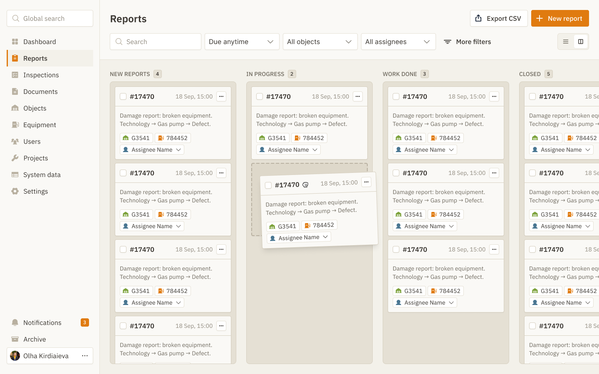
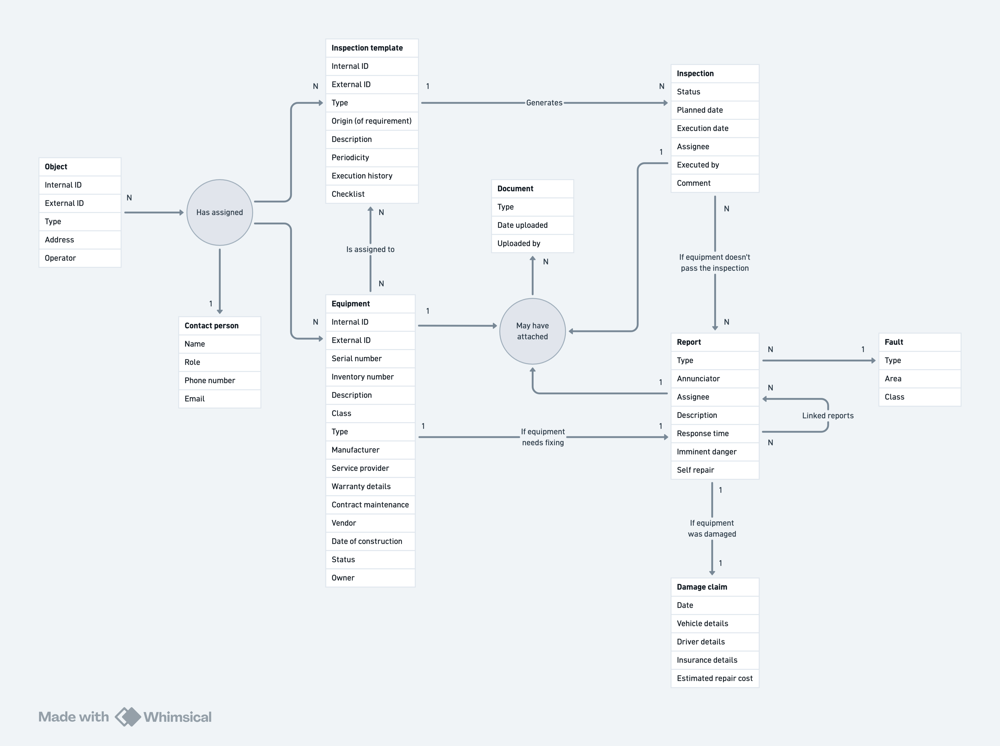
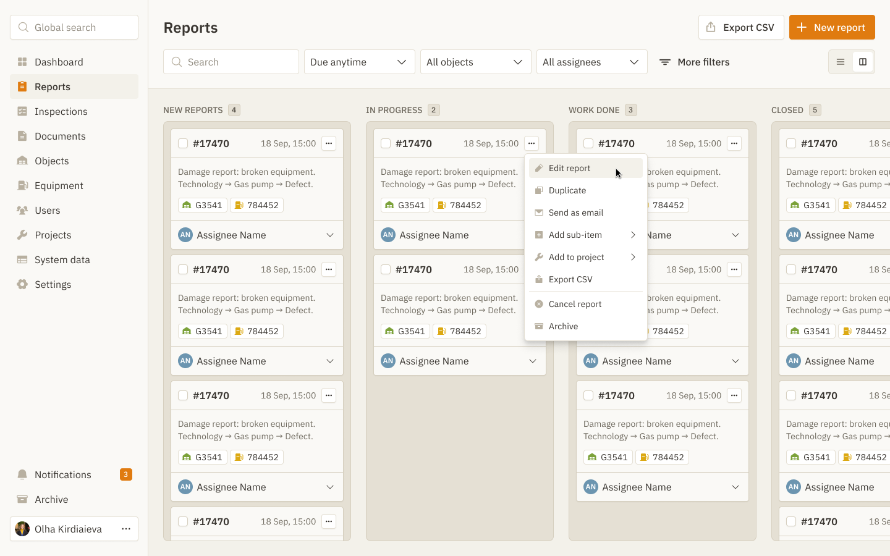
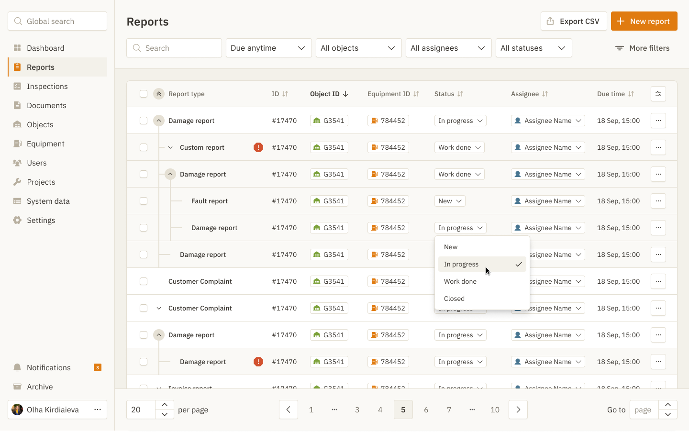
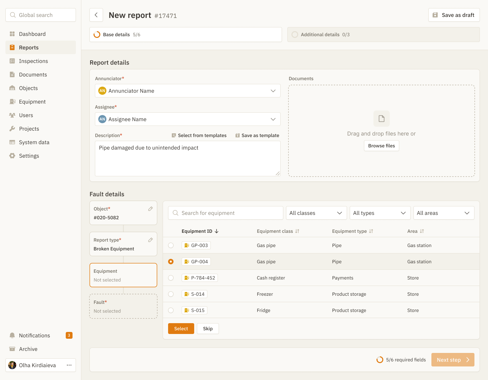

Simplified workflows for a 20-year-old maintenance system
Improving usability of an asset management system serving 5,000+ gas stations.

Context
UX in the need of maintenance
This project was a redesign of a 20-year-old B2B asset management system used primarily by gas stations to keep track of their equipment and perform required maintenance. My goal was to reduce complexity and support the customizable workflows of different user types across 5,000+ stations.
As a UX designer at an agency, I was fully responsible for UX research, wireframing, prototyping, and communication with the client. My main deliverable was a UX prototype, the UI was redesigned in 2026 for this case study.
Process
Finding balance between consistency and change
My first step was an in-depth stakeholder interview. I talked to the CEO, product managers, and the lead developer to gather initial requirements and understand business goals.
Then, I reviewed the existing system and had additional calls with the team to discuss the current implementation details. This helped me clarify the relationships between different entities and, as a result, build an object-oriented diagram of information architecture.

The next step was to conduct user interviews and understand the relevant workflows. After talking to users, I identified insights from conversations and used thematic analysis to group them into categories. This helped me define priorities for the redesign and build a high-level user flow to reflect the actions of users in the system.

Based on the insights from the interviews, users had been using the system for many years, so it was important to keep things in predictable places. At the same time, there was a lack of consistency across different screens, so there was still a need for significant changes. Finding the right balance was one of the main challenges of the redesign.
Solution
Why the Kanban didn't work
While analyzing the information architecture, I realized it contained a very similar entity to a support ticket. This gave me the idea to reuse a pattern from task management systems and introduce a Kanban board. This layout would improve usability for users who process lots of tickets and update their statuses.

Although the client liked the Kanban view at first, it was eventually rejected. The reason was that all statuses were customizable, and not all customer workflows were linear, so it didn’t make sense to visualize them this way. As a result, we decided to stick with the table view.

While keeping the original layout, I introduced some UX changes to improve usability and added useful shortcuts for power users who spend most of their time processing reports:
- Batch selection. Clicking the first checkbox opens a ribbon menu with batch actions to simplify the workflow for users who process large numbers of reports.
- Chips with pop-up previews. Clicking the "Object/Equipment/Assignee" chip in each row opens a pop-up with details. This helps users get a quick preview of data.
- Quick status change. Clicking the "Status" chip opens a pop-over that allows users to update the report status without opening a separate page.
- Customizable filters. At the top of the page, there is a ribbon with a set of filters. This set can be edited through the "All Filters" menu by clicking the eye icon next to a filter. Also, users can save a preset of values as a template and load them whenever needed.
Cutting 2 steps for quick reporting
The most challenging part of the system was the report creation flow. Previously, it was a long and unpredictable form where new questions appeared out of nowhere. This created high friction for users who needed to quickly create reports in order to get the equipment fixed as soon as possible.
After reviewing the information architecture, I was able to simplify the flow by collapsing three different steps into one and then split the form into two pages. This way, I put the required information upfront while moving the optional details to the second page.

Revisiting the project in 2026, this layout could open an opportunity to pre-fill the report with AI using data from the uploaded documents. This wasn't feasible when the project was first designed, but could save even more time for the users when creating reports.
Outcome
Modernized the 20-year-old UX
As a result of the project, I improved usability and pattern consistency of an outdated system, and simplified workflows for power users by reducing the number of repeated actions. This led to positive feedback from the client and allowed them to continue implementation internally using deliverables from the UI designer at the agency.
We were able to reduce the number of steps necessary to complete the tasks our users perform most while also increasing the visibility of those tasks in such a way that errors and missteps were reduced.